| average normalized score | |
|---|---|
| fuzzer | |
| aflplusplus_mopt | 98.23 |
| aflplusplus_c11 | 97.57 |
| aflplusplus_440c | 93.41 |
| aflplusplus_500c | 88.91 |
| average rank | |
|---|---|
| fuzzer | |
| aflplusplus_mopt | 2.15 |
| aflplusplus_440c | 2.40 |
| aflplusplus_c11 | 2.55 |
| aflplusplus_500c | 2.60 |
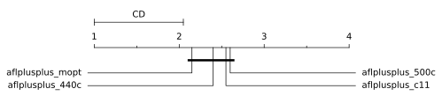
Note: The relative coverage summary table shows the median
relative performance of each fuzzer to the experiment maximum. Thus the
highest relative performance may not be 100%.
trial_relative_coverage = trial_coverage / experiment_max_coverage
| aflplusplus_500c | aflplusplus_440c | aflplusplus_mopt | aflplusplus_c11 | |
|---|---|---|---|---|
| FuzzerMedian | 96.00 | 97.00 | 98.00 | 97.50 |
| FuzzerMean | 95.17 | 95.11 | 95.05 | 94.60 |
| bloaty_fuzz_target | 98.00 | 99.00 | 99.00 | 99.00 |
| curl_curl_fuzzer_http | 98.00 | 97.00 | 98.00 | 98.00 |
| freetype2_ftfuzzer | 94.00 | 90.00 | 91.00 | 90.00 |
| harfbuzz_hb-shape-fuzzer | 99.00 | 99.00 | 99.00 | 99.00 |
| jsoncpp_jsoncpp_fuzzer | nan | 100.00 | 100.00 | 100.00 |
| lcms_cms_transform_fuzzer | 86.00 | 84.00 | 72.00 | 71.00 |
| libjpeg-turbo_libjpeg_turbo_fuzzer | 99.00 | 99.00 | 99.00 | 99.00 |
| libpcap_fuzz_both | 92.00 | 93.00 | 93.00 | 91.00 |
| libpng_libpng_read_fuzzer | 95.00 | 96.00 | 95.00 | 96.00 |
| libxml2_xml | 95.00 | 98.00 | 97.00 | 99.00 |
| mbedtls_fuzz_dtlsclient | 97.00 | nan | 96.00 | 98.00 |
| openssl_x509 | 99.00 | 99.00 | 99.00 | 99.00 |
| openthread_ot-ip6-send-fuzzer | 90.00 | 78.00 | 81.00 | 82.00 |
| proj4_proj_crs_to_crs_fuzzer | 88.00 | 93.00 | 92.00 | 91.00 |
| re2_fuzzer | 99.00 | 99.00 | 98.00 | 99.00 |
| sqlite3_ossfuzz | 97.00 | 94.00 | 99.00 | 96.00 |
| systemd_fuzz-link-parser | 94.00 | 96.00 | 97.00 | 93.00 |
| vorbis_decode_fuzzer | nan | 99.00 | 99.00 | 99.00 |
| woff2_convert_woff2ttf_fuzzer | 95.00 | 97.00 | 99.00 | 96.00 |
| zlib_zlib_uncompress_fuzzer | 98.00 | 97.00 | 98.00 | 97.00 |
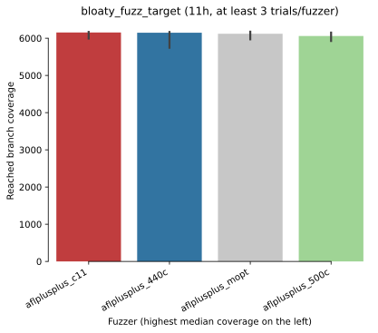
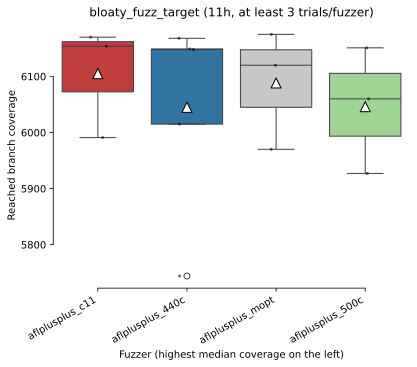
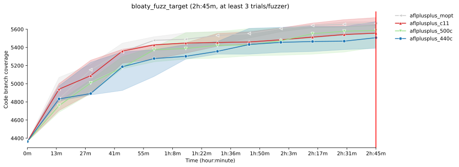
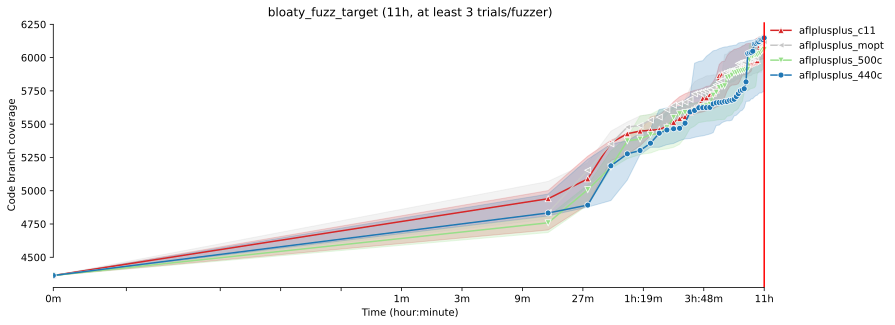
| count | mean | std | min | 25% | median | 75% | max | ||
|---|---|---|---|---|---|---|---|---|---|
| fuzzer | time | ||||||||
| aflplusplus_c11 | 39600 | 3.0 | 6105.000000 | 99.050492 | 5991.0 | 6072.5 | 6154.0 | 6162.0 | 6170.0 |
| aflplusplus_440c | 39600 | 5.0 | 6044.800000 | 178.923727 | 5744.0 | 6015.0 | 6148.0 | 6149.0 | 6168.0 |
| aflplusplus_mopt | 39600 | 3.0 | 6088.333333 | 106.105294 | 5970.0 | 6045.0 | 6120.0 | 6147.5 | 6175.0 |
| aflplusplus_500c | 39600 | 3.0 | 6046.000000 | 112.654339 | 5927.0 | 5993.5 | 6060.0 | 6105.5 | 6151.0 |
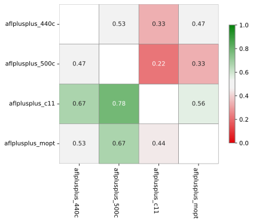
The table summarizes the A12 values from the pairwise Vargha-Delaney A measure of effect size. Green cells indicate the probability the fuzzer in the row will outperform the fuzzer in the column.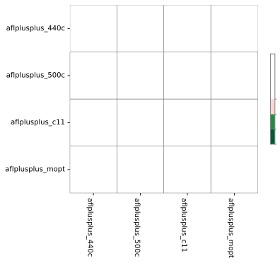
The table summarizes the p values of pairwise Mann-Whitney U tests. Green cells indicate that the reached coverage distribution of a given fuzzer pair is significantly different.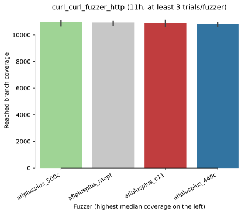
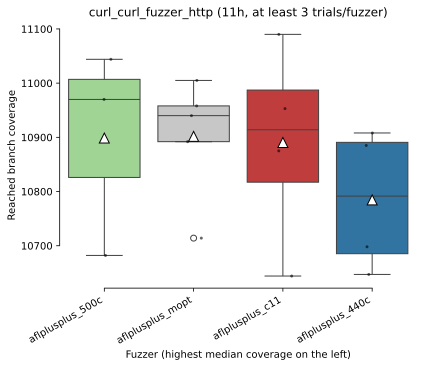
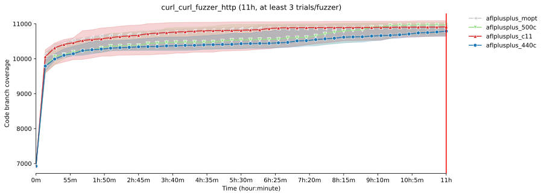
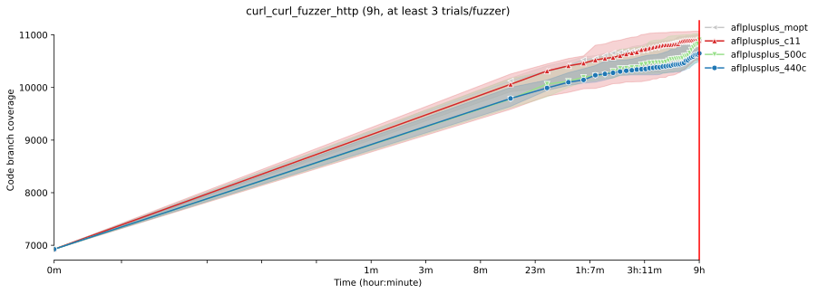
| count | mean | std | min | 25% | median | 75% | max | ||
|---|---|---|---|---|---|---|---|---|---|
| fuzzer | time | ||||||||
| aflplusplus_500c | 39600 | 3.0 | 10898.666667 | 191.252015 | 10682.0 | 10826.00 | 10970.0 | 11007.00 | 11044.0 |
| aflplusplus_mopt | 39600 | 5.0 | 10901.800000 | 112.508666 | 10714.0 | 10892.00 | 10940.0 | 10958.00 | 11005.0 |
| aflplusplus_c11 | 39600 | 4.0 | 10890.500000 | 186.823446 | 10644.0 | 10817.25 | 10914.0 | 10987.25 | 11090.0 |
| aflplusplus_440c | 39600 | 4.0 | 10784.500000 | 131.327834 | 10647.0 | 10685.25 | 10791.5 | 10890.75 | 10908.0 |
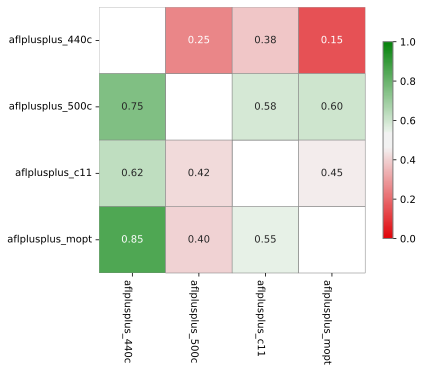
The table summarizes the A12 values from the pairwise Vargha-Delaney A measure of effect size. Green cells indicate the probability the fuzzer in the row will outperform the fuzzer in the column.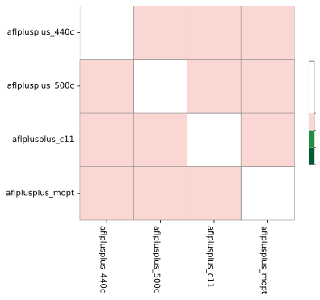
The table summarizes the p values of pairwise Mann-Whitney U tests. Green cells indicate that the reached coverage distribution of a given fuzzer pair is significantly different.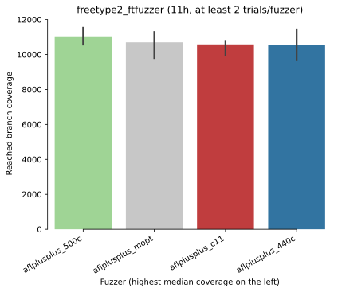
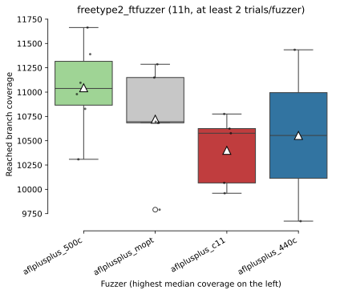
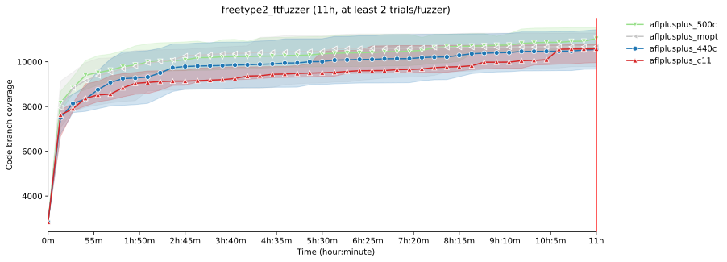
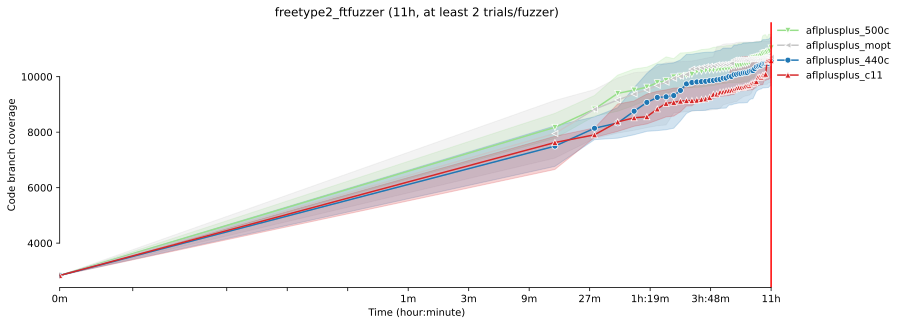
| count | mean | std | min | 25% | median | 75% | max | ||
|---|---|---|---|---|---|---|---|---|---|
| fuzzer | time | ||||||||
| aflplusplus_500c | 39600 | 6.0 | 11044.333333 | 468.599047 | 10309.0 | 10865.75 | 11037.5 | 11316.5 | 11664.0 |
| aflplusplus_mopt | 39600 | 5.0 | 10721.200000 | 585.280018 | 9791.0 | 10684.00 | 10695.0 | 11150.0 | 11286.0 |
| aflplusplus_c11 | 39600 | 5.0 | 10400.600000 | 363.226238 | 9960.0 | 10066.00 | 10577.0 | 10625.0 | 10775.0 |
| aflplusplus_440c | 39600 | 2.0 | 10554.000000 | 1245.922148 | 9673.0 | 10113.50 | 10554.0 | 10994.5 | 11435.0 |
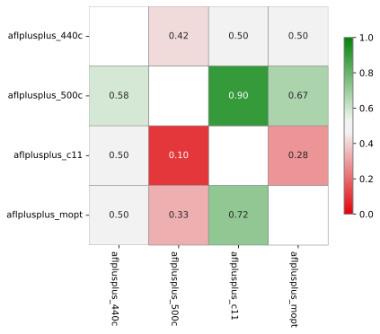
The table summarizes the A12 values from the pairwise Vargha-Delaney A measure of effect size. Green cells indicate the probability the fuzzer in the row will outperform the fuzzer in the column.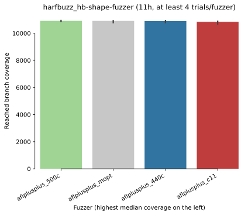
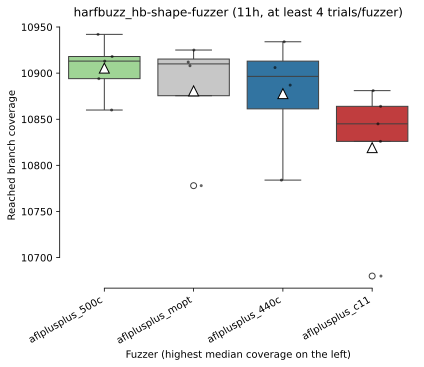
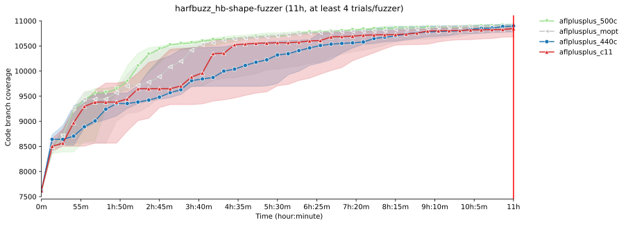
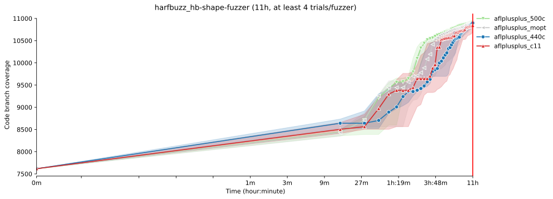
| count | mean | std | min | 25% | median | 75% | max | ||
|---|---|---|---|---|---|---|---|---|---|
| fuzzer | time | ||||||||
| aflplusplus_500c | 39600 | 5.0 | 10905.40 | 30.607189 | 10860.0 | 10894.00 | 10913.0 | 10918.00 | 10942.0 |
| aflplusplus_mopt | 39600 | 4.0 | 10880.75 | 68.883356 | 10778.0 | 10875.50 | 10910.0 | 10915.25 | 10925.0 |
| aflplusplus_440c | 39600 | 4.0 | 10877.75 | 65.413429 | 10784.0 | 10861.25 | 10896.5 | 10913.00 | 10934.0 |
| aflplusplus_c11 | 39600 | 5.0 | 10819.20 | 80.490372 | 10680.0 | 10826.00 | 10845.0 | 10864.00 | 10881.0 |
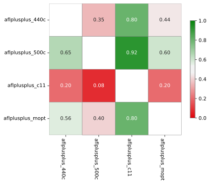
The table summarizes the A12 values from the pairwise Vargha-Delaney A measure of effect size. Green cells indicate the probability the fuzzer in the row will outperform the fuzzer in the column.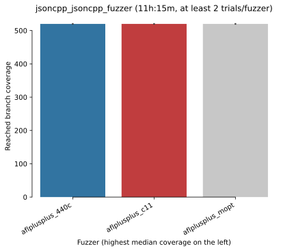
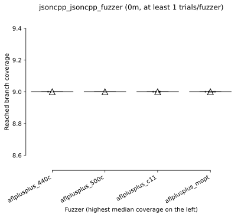
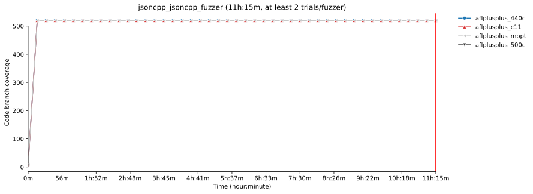
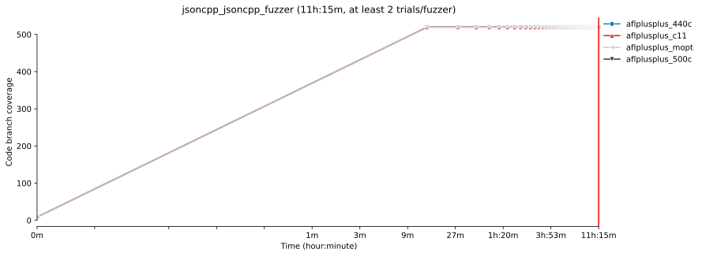
| count | mean | std | min | 25% | median | 75% | max | ||
|---|---|---|---|---|---|---|---|---|---|
| fuzzer | time | ||||||||
| aflplusplus_440c | 40500 | 2.0 | 520.0 | 0.0 | 520.0 | 520.0 | 520.0 | 520.0 | 520.0 |
| aflplusplus_c11 | 40500 | 3.0 | 520.0 | 0.0 | 520.0 | 520.0 | 520.0 | 520.0 | 520.0 |
| aflplusplus_mopt | 40500 | 3.0 | 520.0 | 0.0 | 520.0 | 520.0 | 520.0 | 520.0 | 520.0 |
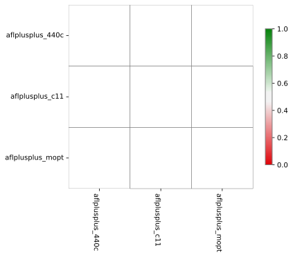
The table summarizes the A12 values from the pairwise Vargha-Delaney A measure of effect size. Green cells indicate the probability the fuzzer in the row will outperform the fuzzer in the column.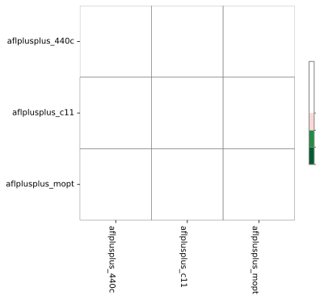
The table summarizes the p values of pairwise Mann-Whitney U tests. Green cells indicate that the reached coverage distribution of a given fuzzer pair is significantly different.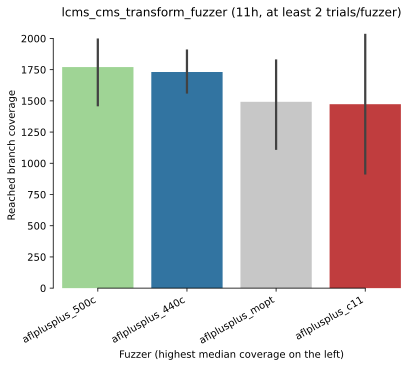
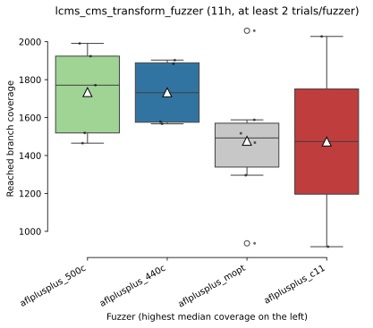
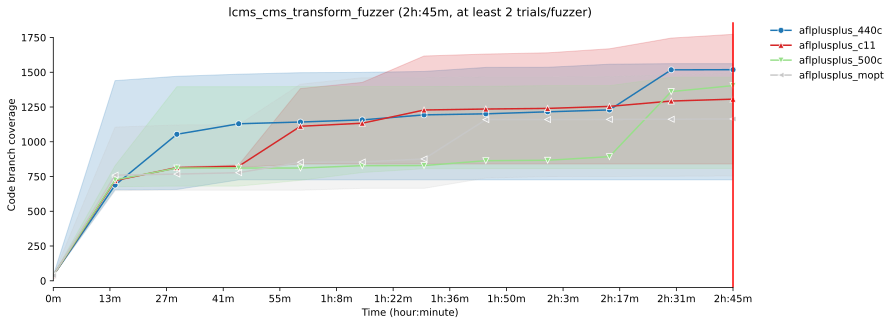
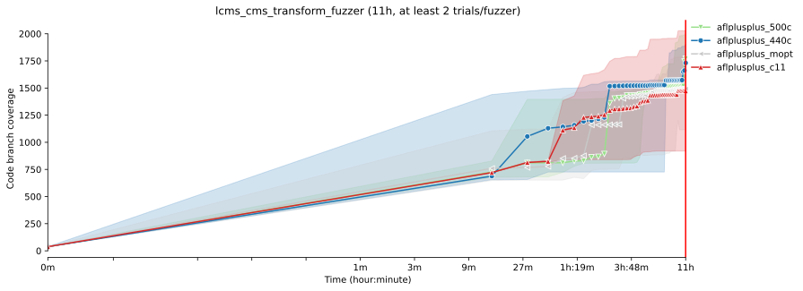
| count | mean | std | min | 25% | median | 75% | max | ||
|---|---|---|---|---|---|---|---|---|---|
| fuzzer | time | ||||||||
| aflplusplus_500c | 39600 | 5.0 | 1734.000000 | 235.639555 | 1465.0 | 1519.00 | 1771.0 | 1924.00 | 1991.0 |
| aflplusplus_440c | 39600 | 4.0 | 1733.000000 | 185.546041 | 1567.0 | 1575.25 | 1731.0 | 1888.75 | 1903.0 |
| aflplusplus_mopt | 39600 | 6.0 | 1477.333333 | 367.674675 | 937.0 | 1339.00 | 1492.5 | 1570.25 | 2058.0 |
| aflplusplus_c11 | 39600 | 2.0 | 1473.500000 | 784.181420 | 919.0 | 1196.25 | 1473.5 | 1750.75 | 2028.0 |
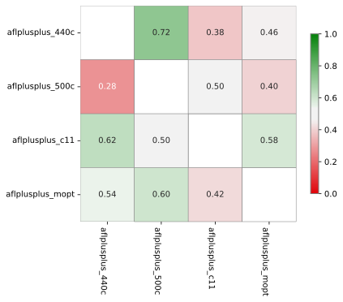
The table summarizes the A12 values from the pairwise Vargha-Delaney A measure of effect size. Green cells indicate the probability the fuzzer in the row will outperform the fuzzer in the column.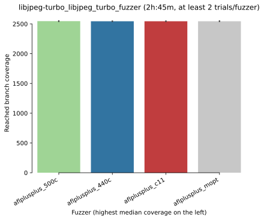
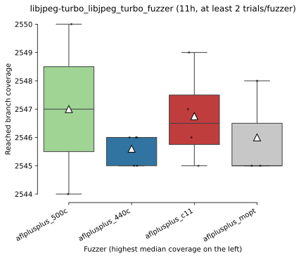
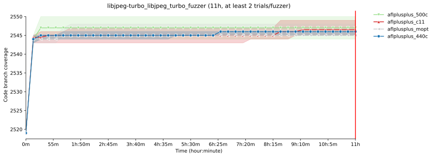
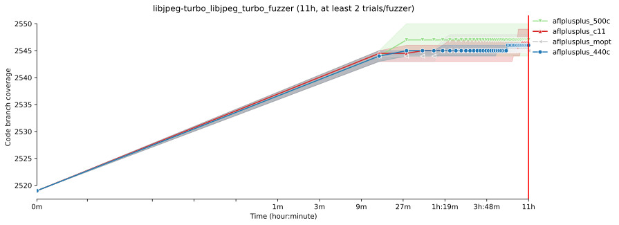
| count | mean | std | min | 25% | median | 75% | max | ||
|---|---|---|---|---|---|---|---|---|---|
| fuzzer | time | ||||||||
| aflplusplus_500c | 39600 | 2.0 | 2547.00 | 4.242641 | 2544.0 | 2545.50 | 2547.0 | 2548.5 | 2550.0 |
| aflplusplus_c11 | 39600 | 4.0 | 2546.75 | 1.707825 | 2545.0 | 2545.75 | 2546.5 | 2547.5 | 2549.0 |
| aflplusplus_440c | 39600 | 5.0 | 2545.60 | 0.547723 | 2545.0 | 2545.00 | 2546.0 | 2546.0 | 2546.0 |
| aflplusplus_mopt | 39600 | 3.0 | 2546.00 | 1.732051 | 2545.0 | 2545.00 | 2545.0 | 2546.5 | 2548.0 |
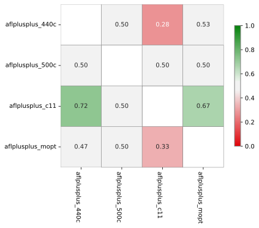
The table summarizes the A12 values from the pairwise Vargha-Delaney A measure of effect size. Green cells indicate the probability the fuzzer in the row will outperform the fuzzer in the column.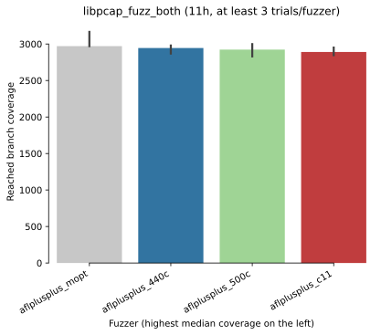
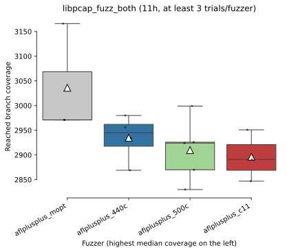
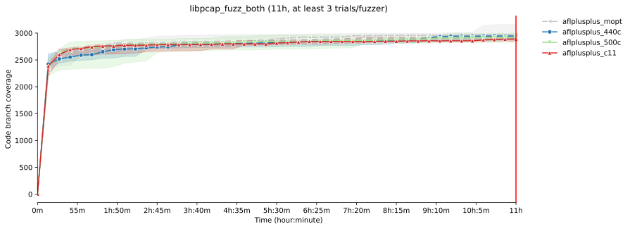
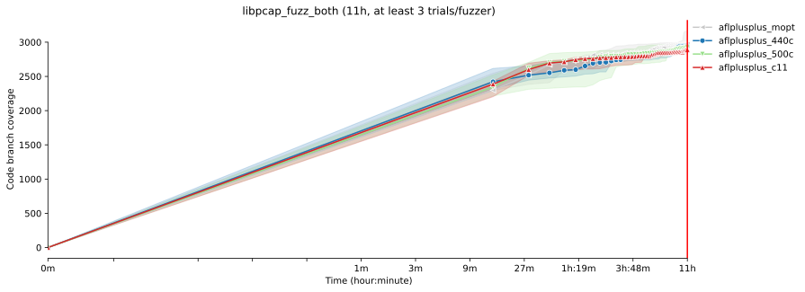
| count | mean | std | min | 25% | median | 75% | max | ||
|---|---|---|---|---|---|---|---|---|---|
| fuzzer | time | ||||||||
| aflplusplus_mopt | 39600 | 3.0 | 3036.000000 | 112.583302 | 2971.0 | 2971.00 | 2971.0 | 3068.5 | 3166.0 |
| aflplusplus_440c | 39600 | 4.0 | 2934.750000 | 47.689097 | 2869.0 | 2917.75 | 2945.0 | 2962.0 | 2980.0 |
| aflplusplus_500c | 39600 | 5.0 | 2909.800000 | 63.978121 | 2830.0 | 2870.00 | 2924.0 | 2926.0 | 2999.0 |
| aflplusplus_c11 | 39600 | 3.0 | 2896.333333 | 52.204725 | 2847.0 | 2869.00 | 2891.0 | 2921.0 | 2951.0 |
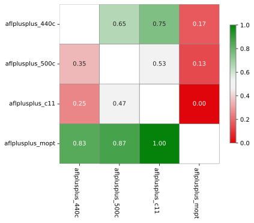
The table summarizes the A12 values from the pairwise Vargha-Delaney A measure of effect size. Green cells indicate the probability the fuzzer in the row will outperform the fuzzer in the column.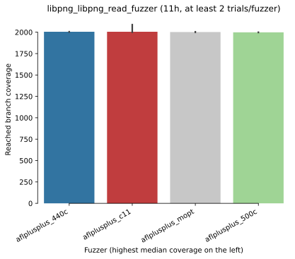
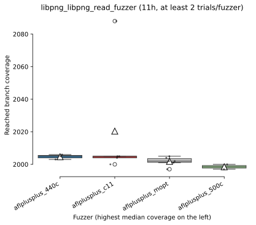
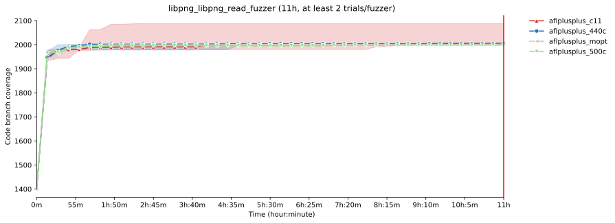
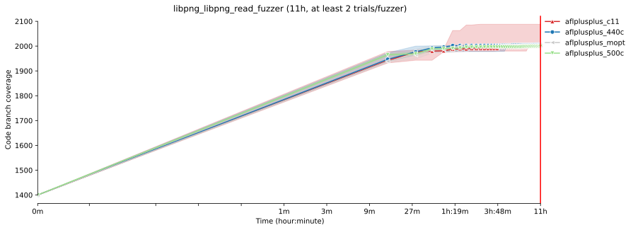
| count | mean | std | min | 25% | median | 75% | max | ||
|---|---|---|---|---|---|---|---|---|---|
| fuzzer | time | ||||||||
| aflplusplus_440c | 39600 | 3.0 | 2004.666667 | 1.527525 | 2003.0 | 2004.00 | 2005.0 | 2005.50 | 2006.0 |
| aflplusplus_c11 | 39600 | 5.0 | 2020.400000 | 37.845740 | 2000.0 | 2004.00 | 2005.0 | 2005.00 | 2088.0 |
| aflplusplus_mopt | 39600 | 6.0 | 2001.833333 | 2.786874 | 1997.0 | 2001.25 | 2002.0 | 2003.50 | 2005.0 |
| aflplusplus_500c | 39600 | 2.0 | 1998.500000 | 2.121320 | 1997.0 | 1997.75 | 1998.5 | 1999.25 | 2000.0 |
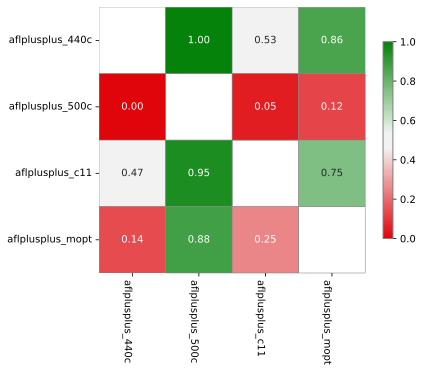
The table summarizes the A12 values from the pairwise Vargha-Delaney A measure of effect size. Green cells indicate the probability the fuzzer in the row will outperform the fuzzer in the column.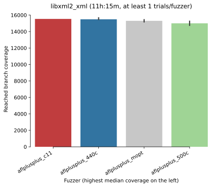
| count | mean | std | min | 25% | median | 75% | max | ||
|---|---|---|---|---|---|---|---|---|---|
| fuzzer | time | ||||||||
| aflplusplus_c11 | 40500 | 1.0 | 15537.000000 | NaN | 15537.0 | 15537.00 | 15537.0 | 15537.00 | 15537.0 |
| aflplusplus_440c | 40500 | 3.0 | 15541.666667 | 111.956837 | 15464.0 | 15477.50 | 15491.0 | 15580.50 | 15670.0 |
| aflplusplus_mopt | 40500 | 2.0 | 15305.500000 | 191.625938 | 15170.0 | 15237.75 | 15305.5 | 15373.25 | 15441.0 |
| aflplusplus_500c | 40500 | 2.0 | 15003.500000 | 354.260497 | 14753.0 | 14878.25 | 15003.5 | 15128.75 | 15254.0 |
| count | mean | std | min | 25% | median | 75% | max | ||
|---|---|---|---|---|---|---|---|---|---|
| fuzzer | time | ||||||||
| aflplusplus_c11 | 39600 | 5.0 | 2763.8 | 32.267631 | 2715.0 | 2755.00 | 2773.0 | 2773.00 | 2803.0 |
| aflplusplus_500c | 39600 | 5.0 | 2755.6 | 23.880955 | 2739.0 | 2739.00 | 2746.0 | 2758.00 | 2796.0 |
| aflplusplus_mopt | 39600 | 4.0 | 2719.5 | 6.557439 | 2714.0 | 2716.25 | 2717.5 | 2720.75 | 2729.0 |
| count | mean | std | min | 25% | median | 75% | max | ||
|---|---|---|---|---|---|---|---|---|---|
| fuzzer | time | ||||||||
| aflplusplus_c11 | 39600 | 5.0 | 5842.600000 | 11.674759 | 5834.0 | 5835.0 | 5837.0 | 5845.00 | 5862.0 |
| aflplusplus_mopt | 39600 | 6.0 | 5841.833333 | 13.673575 | 5831.0 | 5831.5 | 5835.5 | 5851.50 | 5862.0 |
| aflplusplus_440c | 39600 | 7.0 | 5837.000000 | 4.898979 | 5832.0 | 5833.5 | 5835.0 | 5840.00 | 5845.0 |
| aflplusplus_500c | 39600 | 6.0 | 5838.500000 | 10.193135 | 5833.0 | 5833.0 | 5834.5 | 5836.75 | 5859.0 |
| count | mean | std | min | 25% | median | 75% | max | ||
|---|---|---|---|---|---|---|---|---|---|
| fuzzer | time | ||||||||
| aflplusplus_500c | 40500 | 2.0 | 3268.000000 | 463.862048 | 2940.0 | 3104.00 | 3268.0 | 3432.00 | 3596.0 |
| aflplusplus_c11 | 40500 | 2.0 | 2956.000000 | 15.556349 | 2945.0 | 2950.50 | 2956.0 | 2961.50 | 2967.0 |
| aflplusplus_mopt | 40500 | 4.0 | 2974.500000 | 73.031956 | 2936.0 | 2936.75 | 2939.0 | 2976.75 | 3084.0 |
| aflplusplus_440c | 40500 | 3.0 | 2837.333333 | 2.886751 | 2834.0 | 2836.50 | 2839.0 | 2839.00 | 2839.0 |
| count | mean | std | min | 25% | median | 75% | max | ||
|---|---|---|---|---|---|---|---|---|---|
| fuzzer | time | ||||||||
| aflplusplus_440c | 39600 | 3.0 | 6913.666667 | 57.933870 | 6873.0 | 6880.50 | 6888.0 | 6934.00 | 6980.0 |
| aflplusplus_mopt | 39600 | 6.0 | 6860.000000 | 261.989313 | 6627.0 | 6700.25 | 6827.5 | 6854.25 | 7357.0 |
| aflplusplus_c11 | 39600 | 7.0 | 6811.857143 | 215.335729 | 6572.0 | 6699.00 | 6712.0 | 6886.50 | 7228.0 |
| aflplusplus_500c | 39600 | 5.0 | 6600.600000 | 326.057970 | 6282.0 | 6356.00 | 6514.0 | 6775.00 | 7076.0 |
| count | mean | std | min | 25% | median | 75% | max | ||
|---|---|---|---|---|---|---|---|---|---|
| fuzzer | time | ||||||||
| aflplusplus_440c | 39600 | 3.0 | 2858.333333 | 18.903263 | 2837.0 | 2851.00 | 2865.0 | 2869.00 | 2873.0 |
| aflplusplus_500c | 39600 | 7.0 | 2863.714286 | 5.936168 | 2855.0 | 2860.50 | 2862.0 | 2868.50 | 2871.0 |
| aflplusplus_c11 | 39600 | 6.0 | 2852.833333 | 13.585532 | 2834.0 | 2842.25 | 2860.0 | 2862.75 | 2863.0 |
| aflplusplus_mopt | 39600 | 4.0 | 2839.250000 | 5.852350 | 2836.0 | 2836.00 | 2836.5 | 2839.75 | 2848.0 |
| count | mean | std | min | 25% | median | 75% | max | ||
|---|---|---|---|---|---|---|---|---|---|
| fuzzer | time | ||||||||
| aflplusplus_mopt | 39600 | 3.0 | 18860.000000 | 102.239914 | 18744.0 | 18821.50 | 18899.0 | 18918.0 | 18937.0 |
| aflplusplus_500c | 39600 | 4.0 | 18468.250000 | 638.401846 | 17570.0 | 18275.75 | 18626.0 | 18818.5 | 19051.0 |
| aflplusplus_c11 | 39600 | 3.0 | 18182.333333 | 689.196876 | 17422.0 | 17890.50 | 18359.0 | 18562.5 | 18766.0 |
| aflplusplus_440c | 39600 | 3.0 | 17733.333333 | 1431.457416 | 16192.0 | 17089.50 | 17987.0 | 18504.0 | 19021.0 |
| count | mean | std | min | 25% | median | 75% | max | ||
|---|---|---|---|---|---|---|---|---|---|
| fuzzer | time | ||||||||
| aflplusplus_mopt | 39600 | 3.0 | 231.333333 | 7.637626 | 223.0 | 228.0 | 233.0 | 235.50 | 238.0 |
| aflplusplus_440c | 39600 | 2.0 | 230.000000 | 7.071068 | 225.0 | 227.5 | 230.0 | 232.50 | 235.0 |
| aflplusplus_500c | 39600 | 4.0 | 228.250000 | 5.251984 | 225.0 | 225.0 | 226.0 | 229.25 | 236.0 |
| aflplusplus_c11 | 39600 | 5.0 | 222.800000 | 3.492850 | 217.0 | 223.0 | 223.0 | 225.00 | 226.0 |
| count | mean | std | min | 25% | median | 75% | max | ||
|---|---|---|---|---|---|---|---|---|---|
| fuzzer | time | ||||||||
| aflplusplus_mopt | 40500 | 2.0 | 1266.0 | 4.242641 | 1263.0 | 1264.50 | 1266.0 | 1267.50 | 1269.0 |
| aflplusplus_440c | 40500 | 2.0 | 1264.5 | 3.535534 | 1262.0 | 1263.25 | 1264.5 | 1265.75 | 1267.0 |
| aflplusplus_c11 | 40500 | 2.0 | 1258.0 | 1.414214 | 1257.0 | 1257.50 | 1258.0 | 1258.50 | 1259.0 |
| count | mean | std | min | 25% | median | 75% | max | ||
|---|---|---|---|---|---|---|---|---|---|
| fuzzer | time | ||||||||
| aflplusplus_mopt | 39600 | 3.0 | 1163.000000 | 41.761226 | 1115.0 | 1149.00 | 1183.0 | 1187.00 | 1191.0 |
| aflplusplus_440c | 39600 | 3.0 | 1151.333333 | 43.684475 | 1103.0 | 1133.00 | 1163.0 | 1175.50 | 1188.0 |
| aflplusplus_c11 | 39600 | 3.0 | 1163.333333 | 21.571586 | 1148.0 | 1151.00 | 1154.0 | 1171.00 | 1188.0 |
| aflplusplus_500c | 39600 | 2.0 | 1141.500000 | 53.033009 | 1104.0 | 1122.75 | 1141.5 | 1160.25 | 1179.0 |
| count | mean | std | min | 25% | median | 75% | max | ||
|---|---|---|---|---|---|---|---|---|---|
| fuzzer | time | ||||||||
| aflplusplus_mopt | 40500 | 2.0 | 466.000000 | 5.656854 | 462.0 | 464.00 | 466.0 | 468.00 | 470.0 |
| aflplusplus_500c | 40500 | 2.0 | 464.500000 | 4.949747 | 461.0 | 462.75 | 464.5 | 466.25 | 468.0 |
| aflplusplus_440c | 40500 | 3.0 | 460.666667 | 3.214550 | 457.0 | 459.50 | 462.0 | 462.50 | 463.0 |
| aflplusplus_c11 | 40500 | 4.0 | 459.500000 | 1.732051 | 457.0 | 459.25 | 460.0 | 460.25 | 461.0 |
# Check out the right commit.
git checkout 5703c28a4697176d1162c822e2208676376f1874
# Download the internal config file.
curl https://storage.googleapis.com//home/ubuntu/experiment-data/2026-06-15-aflpp-regress-mopt/input/config/experiment.yaml > /tmp/experiment-config.yaml
make install-dependencies
# Launch the experiment using paramters from the internal config file.
PYTHONPATH=. python experiment/reproduce_experiment.py -c /tmp/experiment-config.yaml -e <new_experiment_name>